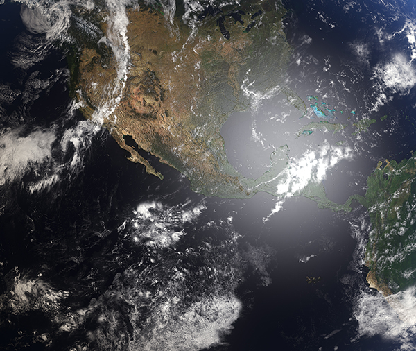

Es la variación del clima provocada de manera natural o por la actividad humana que persiste por largos periodos de tiempo, generalmente décadas o más.
En la historia de la Tierra el clima ha cambiado en diversas ocasiones. La mayoría de estos cambios naturales se atribuyen a variaciones muy pequeñas en la órbita terrestre que cambian la cantidad de energía solar que recibe nuestro planeta y ocurren en miles y millones de años.
El proceso de cambio climático actual es diferente a los que se han presentado en el pasado debido a que se debe principalmente a la influencia humana y a que está ocurriendo mucho más rápido que cualquier otro desde el desarrollo de la civilización o incluso que cualquier periodo interglaciar en el último millón de años.
Desde la Revolución Industrial, nuestra forma de producir y consumir tanto energía como alimentos, ha modificado la composición de la atmósfera por la quema de combustibles fósiles y la degradación de los ecosistemas, aumentado la cantidad de gases de efecto invernadero en la atmósfera en ella y alterando el sistema climático.

| ANT | MENU |
|---|